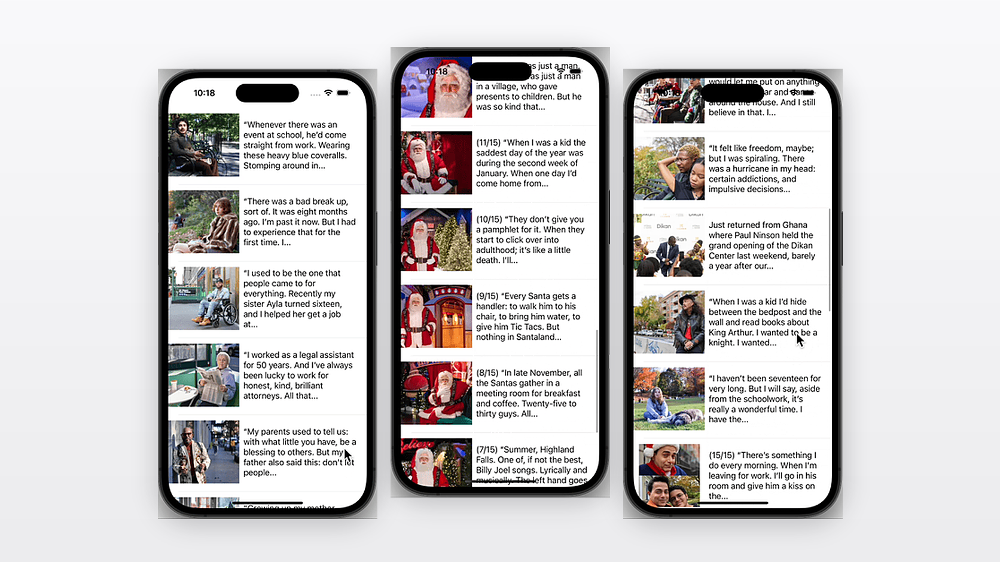
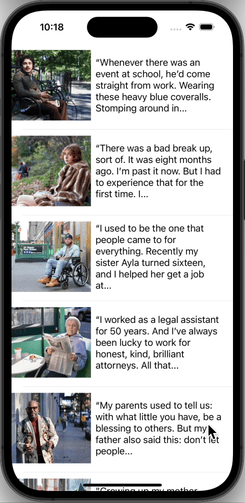

Tumblr Photo Feed: A Native iOS Photo Feed with a Detail Screen
A scrolling list is only half an app: when a reader taps a row, the detail screen has no idea which post they picked. This Swift and UIKit app pulls Humans of New York photo posts from the Tumblr API into a smooth feed and passes the selected post to a detail screen through a segue, so the full photo and story arrive with it.


Running in the simulator — photos load asynchronously as the feed scrolls.
Project Overview
Navigation wired to the detail screen · the detail view built out · the selected post passed through to the detail view controller · a few finishing touches on top.
Swift and UIKit only — no SwiftUI, no networking framework. One URLSession data task, one JSONDecoder, and a storyboard segue.
What I Built
I built this native iOS app for CodePath’s iOS 101 in about four hours, using only Swift and UIKit. A URLSession data task requests photo posts from the Humans of New York blog through Tumblr’s v2 API, and JSONDecoder maps the response into a small tree of Decodable structs: Blog wraps a Response, which wraps an array of Post. The feed is a plain UITableView that dequeues a custom PostCell for every row, and each cell fills itself in through a single configure(with:) method. Tapping a row fires the showDetail segue, where prepare(for:sender:) reads the selected index path, casts the destination to DetailViewController, and assigns the matching Post. The detail screen then shows the full-size photo and the complete story in a UITextView.
Design Decisions
I pass the whole Post model to the detail screen instead of reading text back out of the cell’s labels, so the detail view can show fields the cell never displayed. The detail view controller holds an optional post and unwraps it safely in viewDidLoad, logging a message if the segue is ever misconfigured, which makes a wiring mistake easy to spot. Photos load through Nuke, which fetches and caches off the main thread, so cells can be reused without waiting on the network and revisited rows don’t download the same image twice.
The Result
The app ships all four required features: navigation to the detail screen, a built-out detail view, the selected post passed through to the detail view controller, and a few finishing touches on top. In the simulator, the feed scrolls smoothly while photos load in asynchronously, and tapping any row opens its full photo and story.
Key Features
A live feed from the Tumblr API with separate handling for transport errors, bad status codes, empty bodies and decoding failures; Codable models with CodingKeys that rename original_size to originalSize; a reusable custom cell configured in one place; asynchronous, cached image loading with Nuke; a typed segue hand-off of the selected Post; a reading-friendly detail screen with a scrollable, selectable, non-editable UITextView; and finishing touches like a welcome alert and a String extension that strips HTML from Tumblr captions through NSAttributedString.